Descripción de la tarea
Esta tarea es una práctica guiada paso a paso, aprenderás a crear hojas de cálculo, utilizar datos, aplicar fórmulas para hacer cálculos automáticos, dar formato a las celdas, crear gráficos, interpretar la información resultante y, por último, compartir el resultado.
Visualiza el siguiente vídeo en el que se hace una explicación de las distintas partes de la práctica: Vídeo explicación detallada.
Crear y compartir la Hoja de cálculo
Esta práctica consiste en hacer una copia de una hoja de cálculo para manipular posteriormente los datos que contiene y presentar la información de una forma adecuada.Lo primero que tienes que hacer es COPIAR (Archivo / Hacer una copia) los datos con los que debes trabajar en tu Drive:
COPIA: Hoja de cálculo con los datos de inicio
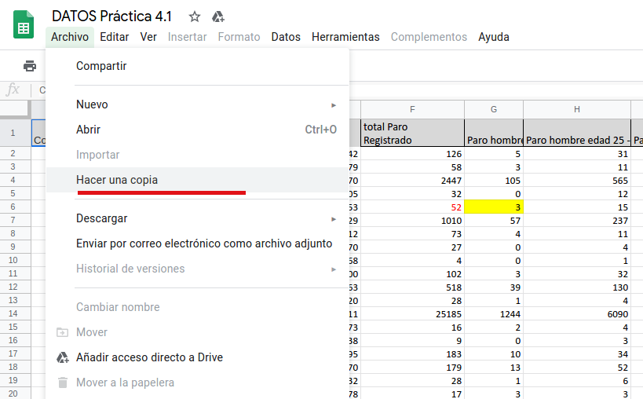
En todo momento, la práctica debes trabajarla con las hojas de cálculo de Google Drive. Es decir, en ningún caso hay que descargarse la hoja a tu PC.
Al final, has de compartir tu propia hoja de cálculo con permisos de edición para que tu docente pueda corregir adecuadamente. El resultado de la tarea es el enlace público al documento (con permisos para "Ver y Editar").
Manipular la Hoja de cálculo
Debes insertar una fila al principio de los datos de forma que puedas poner un título apropiado. Para ello, debes concatenar las celdas de esta fila que acabas de insertar.El resultado debe ser algo parecido a lo que se muestra en la siguiente imagen:
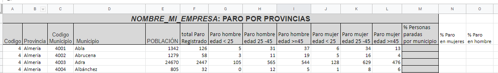
A modo de ayuda, tienes las siguientes indicaciones:
- En el vídeo con la explicación de la práctica, se muestra cómo realizar esta parte.
- Una vez que se ha insertado la fila, se ha ajustado el texto de la segunda fila para que cada columna ocupa menos espacio (para hacer que el texto de una celda ocupe el siguiente renglón, puedes usar ALT + ENTER).
- Se ha usado la "concatenación de celdas" para fusionar las celdas A1:M1 en una sola.
- Se ha trabajado con los bordes de las celdas para que se muestren correctamente.
- Puedes poner el título que creas apropiado pero al principio debe aparecer el nombre de tu asociación. Se le ha aplicado un tamaño diferente de letra al mismo para que destaque.
- Puedes alinear el texto dentro de la celda para que se muestre correctamente.
- Puedes controlar el ancho de cada columna, haciendo doble clic justo en la separación de las columnas. Ejemplo, si quiero ajustar el ancho de la columna C, hago doble clic en la línea que separa la columna C y D.
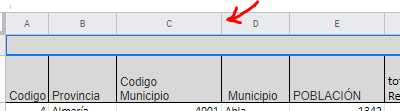
Dar formato a las celdas
Debes dar un formato adecuado a las celdas de forma que se presenta la información de una forma más llamativa. Tanto el título como las cabeceras de las columnas deben sobresalir del resto de datos.
Cambia el formato original de las celdas: Utiliza colores, sombreados y bordes para que la información quede clara y atractiva.
Un ejemplo de lo que debes hacer se muestra en la siguiente imagen:
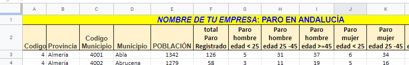
Utilizar fórmulas
Se debe insertar la fórmula adecuada en las celdas M2, N2 y O2, de forma que al arrastrar la misma en la columna, haga el cálculo correctamente.
- En la columna M, se debe presentar el % de paro en cada municipio. Este cálculo se obtiene como la división entre el total de paro y la población de cada municipio.
- En la columna N, se debe presentar el % de paro en mujeres. Este cálculo se obtiene como la división entre el número de mujeres en paro de las distintas franjas de edad y la población de cada municipio.
- En la columna O, se debe presentar el % de paro en hombres. Este cálculo se obtiene como la división entre el número de hombres en paro de las distintas franjas de edad y la población de cada municipio.
A la hora de trabajar con fórmulas en una hoja de cálculo es primordial aplicar las prioridades matemáticas a los operadores y usar convenientemente los paréntesis.
La información se tiene que presentar como un % y sin decimales. Se debe configurar de una forma similar a la siguiente:
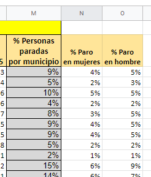
Ahora vamos a presentar la información de una manera más atractiva a partir de formatos condicionales y gráficos:
Formato condicional
Esta funcionalidad es muy interesante. La hoja de cálculo muestra un color de forma automática en aquellas celdas en las que se configure unos umbrales.
Debes configurar el formato condicional en la columna M, de forma que se muestre una escala de colores. Los umbrales que se tienen que establecer:
- Verde para un punto mínimo del 5% de paro (valor = 0,05).
- Naranja para un punto medio del 7% de paro (valor = 0,07).
- Rojo para un punto máximo del 15% de paro (valor = 0,15).
Se tiene que mostrar algo parecido a lo que se muestra en la siguiente imagen:
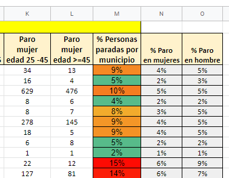
Uso de referencias absolutas y fórmulas
Insertar en las celdas de color verde (R4:S11) el total de la población por provincia así como el número de municipios por provincia. En las celdas R4 y S4 debe haber una fórmula que se puede arrastrar al resto de celdas para calcular el valor.
Los valores de esta tabla deben ir en formato numérico sin decimales. El resultado tiene que ser algo parecido a lo que se muestra:
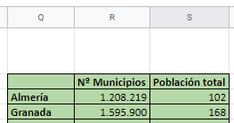
- Para calcular la población total por provincia hay que utilizar la función SUMAR.SI.
- Para calcular el número de municipios por provincia hay que utilizar la función CONTAR.SI.
- Habitualmente, cuando en una función se usa un rango y esa fórmula se va utilizar en otras celdas, ese rango hay que fijarlo: $E$3:$E$773.
A tener en cuenta:
- Según la configuración personal de vuestra cuenta de DRIVE, es posible que las fórmulas aparezcan en inglés.
- Revisad bien los datos, puede que haya ciertos fallos y debéis hacer correcciones.
Gráfico de barras
Debes insertar una hoja nueva con el nombre PARO PROVINCIAS. Esta hoja debe contener un gráfico que muestre el promedio de paro total, en mujeres y en hombres, por provincia. Debe tener un aspecto como el que se muestra a continuación:
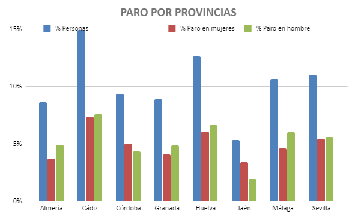
En este gráfico, es importante agrupar por provincias los datos:
Tras seleccionar las columnas M,N,O hay que decirle al asistente que seleccione como EJE X la columna de las provincias y además que las agrupe para que contabilice así todas las poblaciones de la misma provincia juntas.
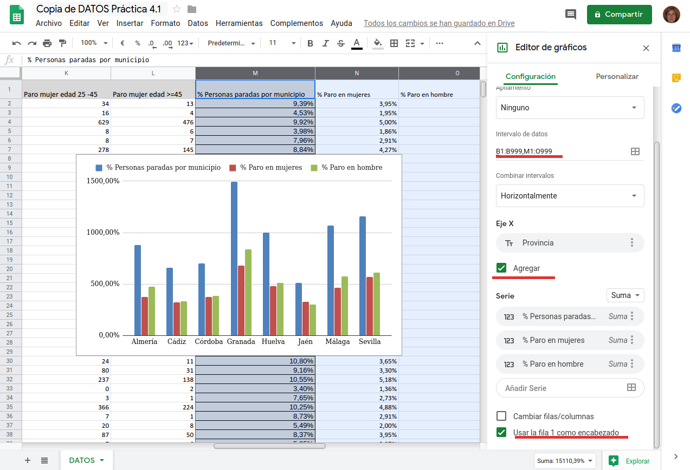
Para que la información de un gráfico sea fácilmente interpretable, es importante añadir un título y las leyendas que describen los diferentes ejes:
A la hora de seleccionar los datos para el gráfico has debido seleccionar también la fila con los nombres de las columnas (que luego servirán de leyenda). Una vez creado el gráfico, pulsas con el botón derecho y te salen todas las opciones del mismo. Allí podrás definir tanto el título como las propiedades de la leyenda.
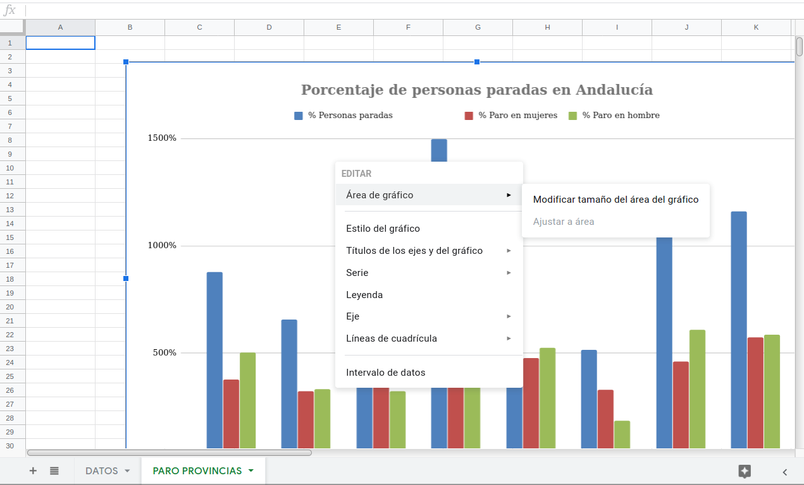
Gráfico circular
Insertar un gráfico circular que muestre la información obtenida anteriormente.
Debe mostrar un aspecto parecido al siguiente:
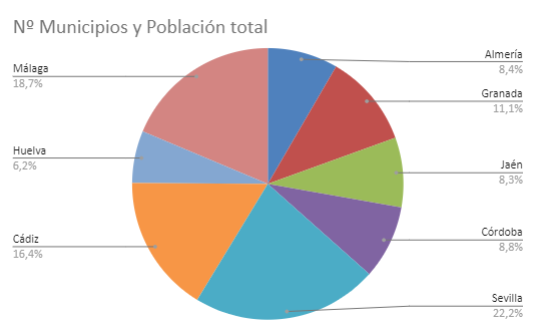
Esta tarea no tiene plantilla. Tienes que entregar lo siguiente:
- El enlace público a tu hoja de cálculo. Recuerda que debes compartir la hoja de cálculo de forma que tu profesor pueda verla y editarla disponiendo del enlace.
Obra publicada con Licencia Creative Commons Reconocimiento No comercial Compartir igual 4.0